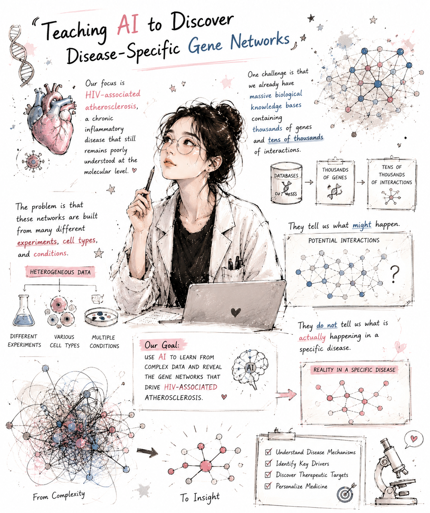

Immune Digital Twins
Virtual patient simulation and in silico perturbation frameworks for coordinated monocyte immune programs.
Computational Immunology · Single-Cell Genomics · AI/ML
Ph.D. candidate in Biomedical Genetics (Bioinformatics Track) in Thakar Lab at the University of Rochester Medical Center, NY.
I develop and apply statistical and machine learning methods for large-scale multi-omics data, with a focus on single-cell genomics, gene regulatory network modeling, computational immunology, and immune digital twin frameworks.
My work connects immune biology with scalable computational methods, aiming to understand how cellular states, signaling programs, and regulatory networks are organized and rewired in disease.
I use biological knowledge bases, single-cell data, and machine learning to move from heterogeneous network complexity toward disease-specific mechanistic insight.

Virtual patient simulation and in silico perturbation frameworks for coordinated monocyte immune programs.
Condition-specific regulatory rewiring from single-cell data using prior knowledge, foundation models, and graph attention networks.
Benchmarking and method development for pathway activity scoring at single-cell resolution.
A selection of first-author and collaborative work spanning pathway scoring, monocyte biology, rheumatoid arthritis, and RNA biology.
Selected research talks and posters.
Eli Lilly and Company, Boston, MA.
Research Assistant with Dr. Juilee Thakar, integrating prior knowledge networks, foundation models, and single-cell data.
Research Assistant with Dr. Jennifer Anolik and Dr. Juilee Thakar, studying clonal relationships and Tph-B cell interactions in synovium.
Developed pathway scoring methods and integrated single-cell and proteomic data to characterize monocyte heterogeneity.
Programming, computing, and biological data domains used across my research.
I am interested in full-time opportunities at the intersection of immunology, AI/machine learning, and translational biomedical data science.